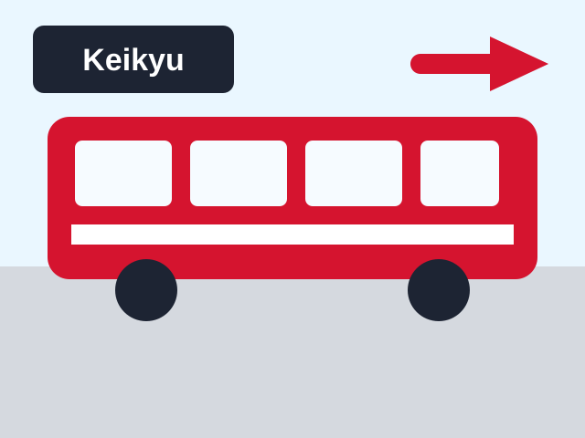
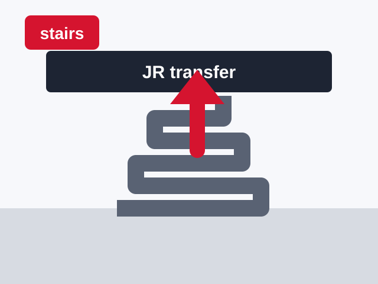
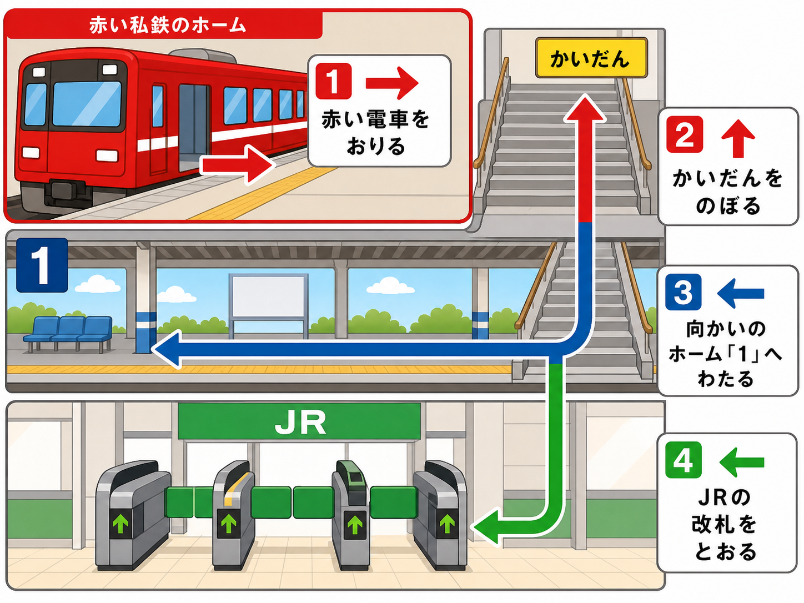
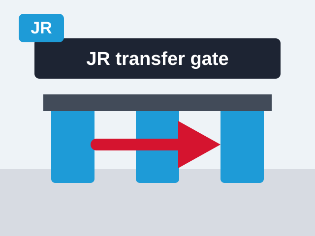
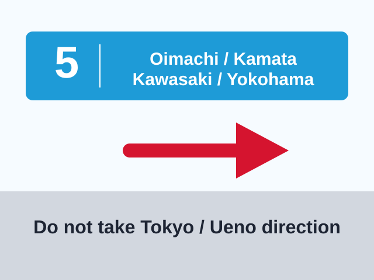
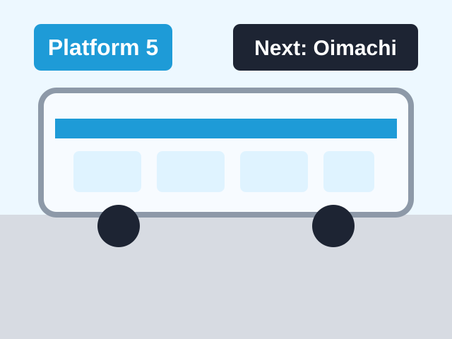
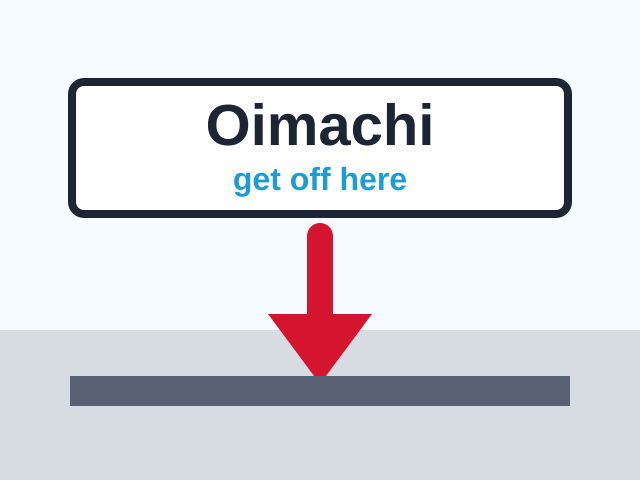
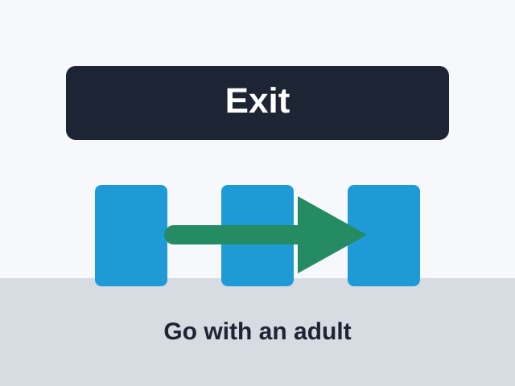

駅入口
駅入口
写真: 青物横丁駅の入口
駅名看板と改札が見える写真
1
2
2ばんせんを さがす
あおものよこちょうで、2 の ホームへ いきます。
大人確認: 青物横丁駅で品川方面の2番線へ。ICカードを準備して改札へ。
さがすもの: 2番線 / 品川方面
駅入口
あおものよこちょうで、2 の ホームへ いきます。
大人確認: 青物横丁駅で品川方面の2番線へ。ICカードを準備して改札へ。
 2番線
2番線
2 の ところで でんしゃを まちます。しながわへ いくよ。
大人確認: 京急の品川・新橋・浅草方面ホームへ。

京急 品川で降りるあかい でんしゃに のって、しながわで おります。
大人確認: 品川に停車する列車に乗車。乗り過ごし注意。

➜ 上へしながわで おりたら、JR のりかえ の かいだんを のぼります。
大人確認: 青物横丁から品川方面で到着後、JR連絡改札のある1番線側へ移動するため、階段・跨線橋の案内に従う。

1番線側 ➜かいだんの うえを とおって、1 の ホームがわへ いきます。
大人確認: 京急品川のJR連絡改札は横浜・羽田空港方面の1番線ホーム側。向かい側へ渡る。

JR ➜JR の マークを みつけたら、のりかえ かいさつを とおります。
大人確認: 京急の出口ではなく、JR乗り換え改札を通る。ICカードならタッチして通過。

5番線 蒲田・川崎・横浜方面JRに はいったら、5 と かまた・かわさき・よこはま の かんばんを さがします。
大人確認: 品川駅では京浜東北線の南行、大井町・蒲田・川崎・横浜・大船方面へ。番線や行き先表示は当日現地で確認。

5番線 大井町へ5 の ところで、かまた・かわさき・よこはま ほうめんの でんしゃに のります。
大人確認: 京浜東北線の蒲田・横浜・大船方面に乗る。

大井町おおいまち が みえたら、おります。とうちゃく！
大人確認: 品川の次が大井町。降車後は目的地に合わせて出口へ。

出口かいさつを でたら、おとなの ひとと いっしょに すすみます。
大人確認: 目的地に合わせて中央口・東口・西口を選ぶ。